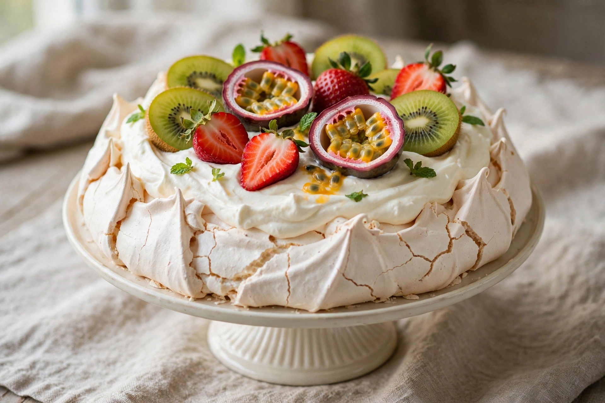

Pavlova (dessert)
| Pavlova | |
| Type | Meringue dessert |
|---|---|
| Place of origin | Australia / New Zealand (disputed) |
| Named after | Anna Pavlova |
| Main ingredients | Egg whites, sugar, whipped cream, fruit |

Pavlova is a meringue-based dessert with a crisp crust and soft, light interior, topped with whipped cream and fresh fruit. It is named after the Russian ballerina Anna Pavlova, who toured Australia and New Zealand in the 1920s; both countries claim its invention, and it is an iconic dish of both nations, especially at Christmas and summer celebrations.
Preparation
Egg whites are beaten with sugar (and usually a little cornflour and vinegar) to a stiff meringue, shaped into a round nest and baked slowly at low temperature, then cooled in the oven. The result is crisp outside and marshmallow-soft within. Classic toppings are whipped cream with kiwifruit, strawberries and passionfruit.
Origin dispute
Recipes for similar meringue cakes appear in both countries in the 1920s–30s. Research by the Oxford English Dictionary leaned to New Zealand for the first recorded use of the name, while Australians cite chef Bert Sachse's 1935 pavlova at Perth's Esplanade Hotel — the dispute remains a friendly trans-Tasman rivalry.
See also: Meringue, Anna Pavlova.